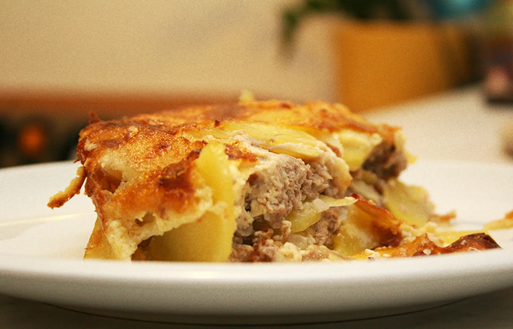

Home
Musaka

Description
Musaka is a hearty, comforting baked dish popular across the Balkans, made with layers of potatoes, seasoned minced meat, and a rich egg-and-cream topping. It’s known for its golden crust, soft interior, and deep homemade flavor that makes it a classic family meal.
This version of musaka combines thinly sliced potatoes with savory beef and onions, all baked together until tender. The creamy topping forms a slightly crispy layer on top while keeping the inside juicy and flavorful. It’s simple, filling, and perfect for lunch or dinner, especially when served with a fresh salad or yogurt on the side.
Ingredients
200 ml cooking cream or milk
50 ml water of beef broth
Steps
Preheat the oven to 200°C and grease a baking dish with a little oil or butter.
Peel and slice the potatoes into thin rounds. Finely chop the onion and garlic.
Heat oil in a pan and cook the onion until soft. Add the garlic and ground beef, then season with salt, pepper, and paprika. Cook for about 10 minutes.
Layer half of the potatoes in the baking dish, add the cooked meat mixture, then cover with the remaining potatoes.
In a bowl, whisk together the eggs and cooking cream (or milk). Pour the mixture evenly over the musaka.
Bake for 45–60 minutes until the potatoes are soft and the top is golden brown. Let it rest for a few minutes before serving.